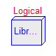
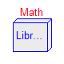
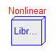
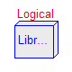
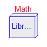
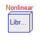
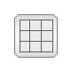
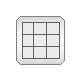

 


This library contains input/output blocks to build up block diagrams. The library is structured in the following sublibraries:
Interfaces Connectors and partial models for block diagram components
Examples Demonstration examples
Continuous Basic continuous input/output blocks
Discrete Discrete control blocks
Logical Logical and relational operations on Boolean signals
Nonlinear Discontinuous or non-differentiable algebraic
control blocks
Math Mathematical functions as input/output blocks
Sources Sources such as signal generators
Routing Combine and extract signals
Tables One and two-dimensional interpolation in tables
Types Constants and types with choices, especially to build menus
Copyright © 1999-2004, Modelica Association and DLR.
The Modelica package Modelica.Blocks is free software; it can be redistributed and/or modified under the terms of the Modelica license, see the license conditions and the accompanying disclaimer here.
| Name | Description |
|---|---|
| Examples | Demonstration examples of the components of this package |
| Continuous | Continuous control blocks with internal states |
| Discrete | Discrete input/output blocks with fixed sample period |
| Interfaces | Connectors and partial models for input/output blocks |
| Logical | Components with Boolean input and output signals |
| Math | Mathematical functions as input/output blocks |
| Nonlinear | Discontinuous or non-differentiable algebraic control blocks |
| Sources | Signal source blocks generating Real and Boolean signals |
| Tables | One and two-dimensional interpolation in tables |
| Types | Constants and types with choices, especially to build menus |